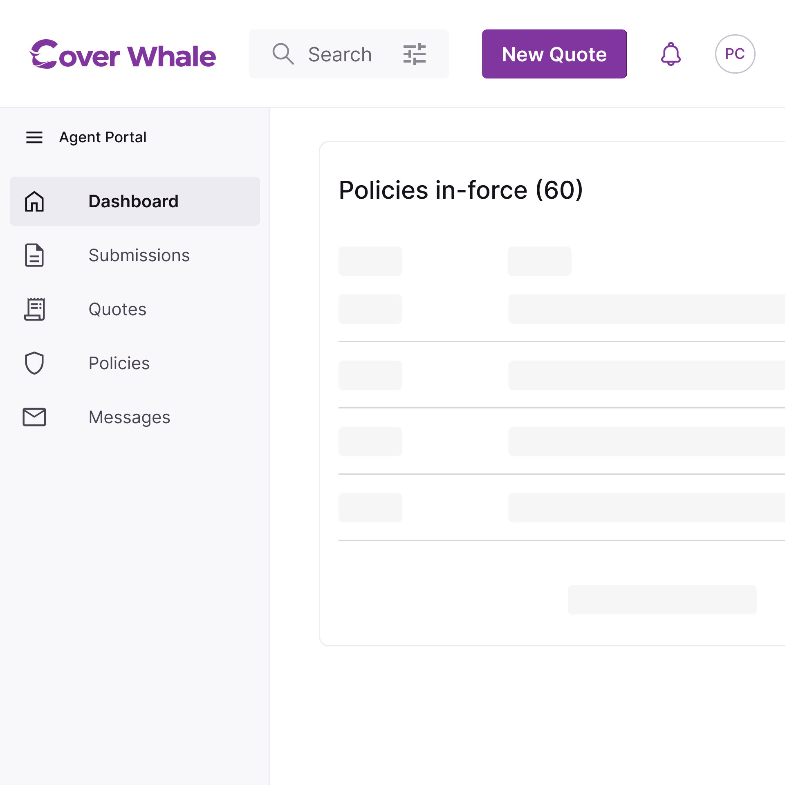
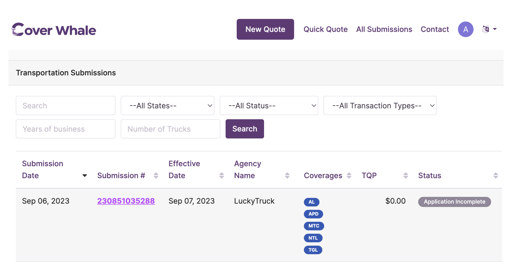
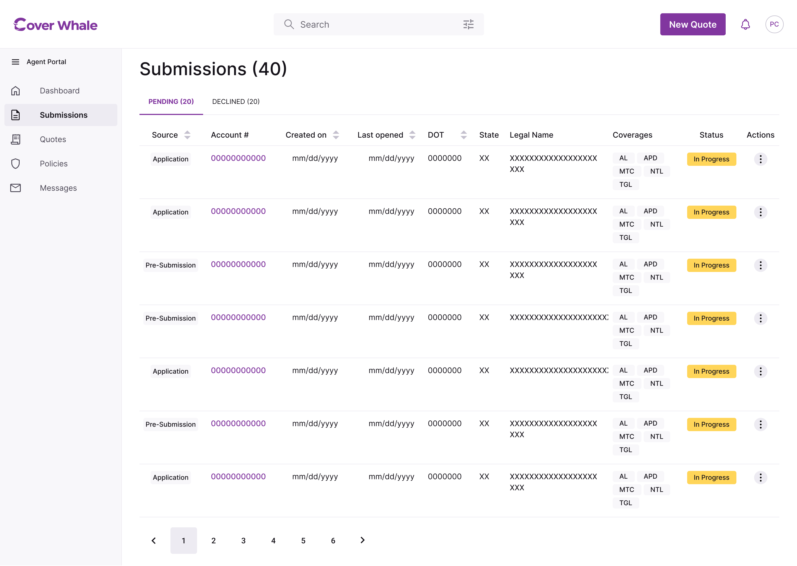
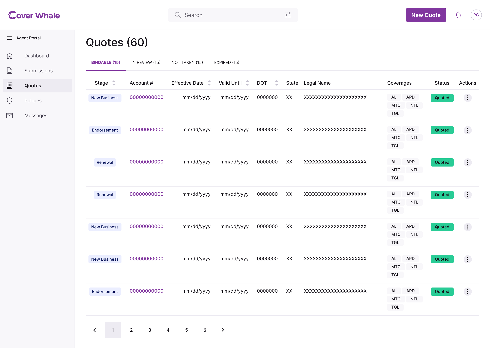
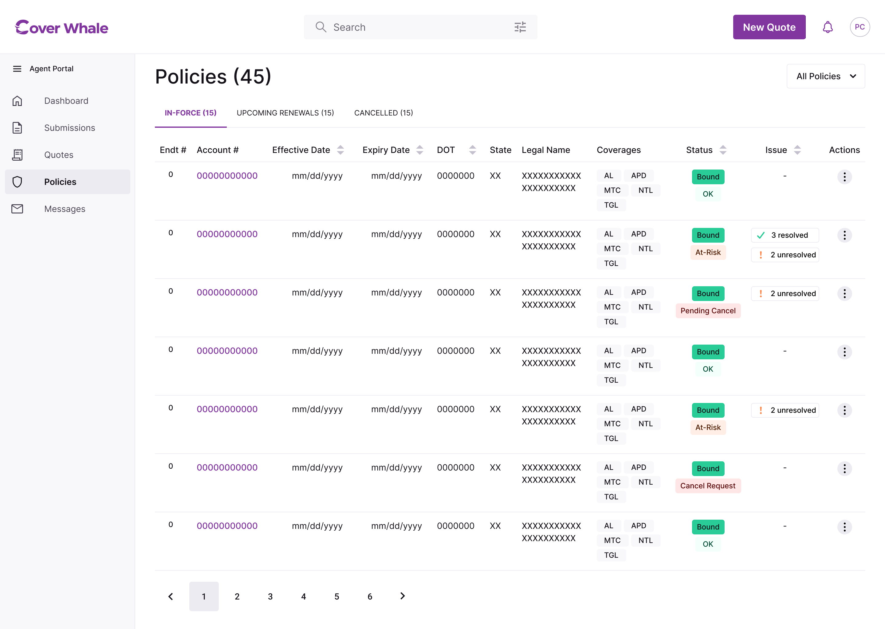
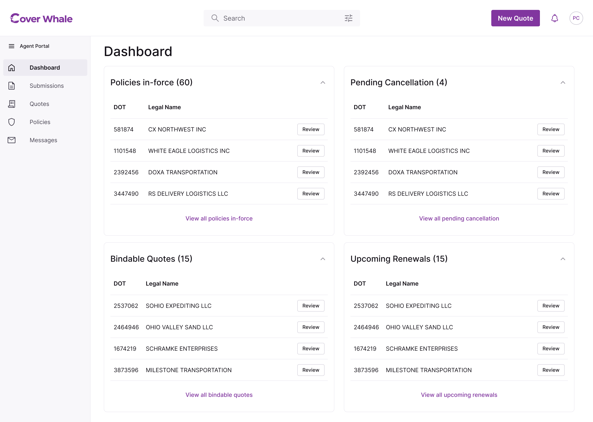
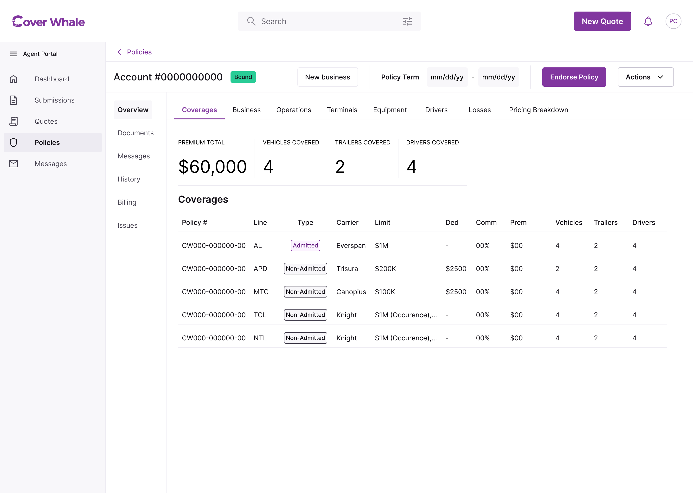

What I Owned
I led research, information architecture, and design direction — producing the sitemap, all documentation, and the mid-fidelity clickable prototype used for agent usability testing.
Redesigned a policy management platform from a single mixed-table architecture to a lifecycle-based navigation system — organizing submissions, quotes, and policies around how agents actually think.

What I Owned
I led research, information architecture, and design direction — producing the sitemap, all documentation, and the mid-fidelity clickable prototype used for agent usability testing.
Who I Worked With
UX Vendor (Zurich): two designers, one front-end engineer, CEO. Internal: COO, PM, Product Manager, and the heads of Underwriting, Growth, Operations, CX, and the company CEO. Weekly Design Sync kept cross-functional alignment across the full stakeholder group.
How the Work Actually Moved
NY to Zurich is 6 hours. Writing requirements EOD meant the vendor team could start at 3am local time — enabling a near-24-hour work cycle across the initial 6-week sprint.
The Setup
Cover Whale is a Managing General Agent — the intermediary between insurance carriers and the agents who sell their policies. Carrier retention and platform revenue are directly linked. The 'All Submissions' page was a single mixed table: submissions, quotes, policies, and endorsements all in one view. Treating them the same meant agents had no way to understand where a piece of business stood — or what needed attention right now.

What Research Showed
11 agent interviews pointed to the same friction: agents needed faster processing, consistent data, quicker Underwriter response times, and a clearer picture of where each piece of business stood. All four traced back to the architecture.
The Insight
Each stage of the policy process carries different information, different actions, different urgency. The flat architecture made agents impose that distinction themselves, every time they opened the app. The redesign built it in.
A submission becomes a quote becomes a policy — each stage has its own statuses, actions, and exit points.
Key Decision 01
Submissions, Quotes, and Policies replaced 'All Submissions' — each scoped to one stage, with only the statuses and actions relevant to that stage.
Submissions carries Pending and Declined. Quotes surfaces four outcomes — Bindable, In Review, Not Taken, Expired — with a Stage column for context. Policies reflects current status: In-Force, At-Risk, Pending Cancellation, Renewals, Cancelled.



Key Decision 02
Testing with agents — including Manager-level producers — confirmed that individual task visibility was more useful across all levels than an agency-wide view. We stripped it back to four counts: what's bound, what's at risk, what's ready to close, what's up for renewal. No charts. Every widget answers a question an agent actually asks at the start of their day.

Key Decision 03
Each new submission — endorsement, renewal, new coverage line — created a separate record. An agent managing a long-term client had no single place to see everything.
Shifting to Account consolidated activity, communication, and history under one record per insured. The insured is the relationship. The submission is a transaction within it.

How It Tested
Agents recognized the lifecycle structure immediately — it reflected how they already thought. The mid-fidelity prototype was handed to the vendor team, advanced to hi-fidelity, and front-end development began. The shift to Account-level identifiers set the foundation for the Messages redesign.
The Simplest Validation
Agents stopped asking "where do I find X?" That absence was the clearest signal.
Beyond the Platform
The mid-fidelity prototype was presented to investors as proof of where the product was headed. Cover Whale secured its Series A. The designs were handed to the vendor team, advanced to hi-fidelity, and front-end development began.
Next Case Study
The Quote Application →